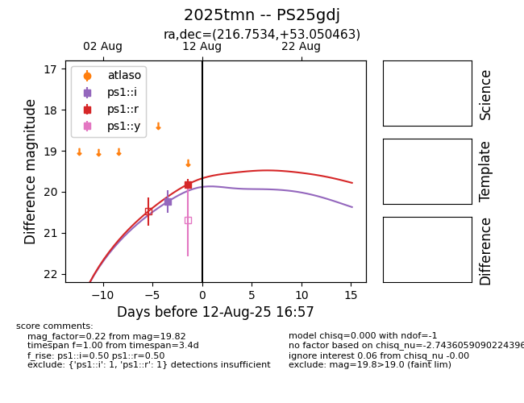

Target 2025tmn at 2025-08-12 19:13, see:
TNS: wis-tns.org/object/2025tmn
YSE: ziggy.ucolick.org/yse/transient_detail/2025tmn
alt names
2025tmn (yse,tns)
PS25gdj (panstarrs)
coordinates:
equatorial (ra, dec) = (216.7534,+53.05046)
galactic (l, b) = (95.0728,+58.59869)
photometry
last ps1::i=20.24, ps1::r=19.82
1 ps1::i, 1 ps1::r detections
